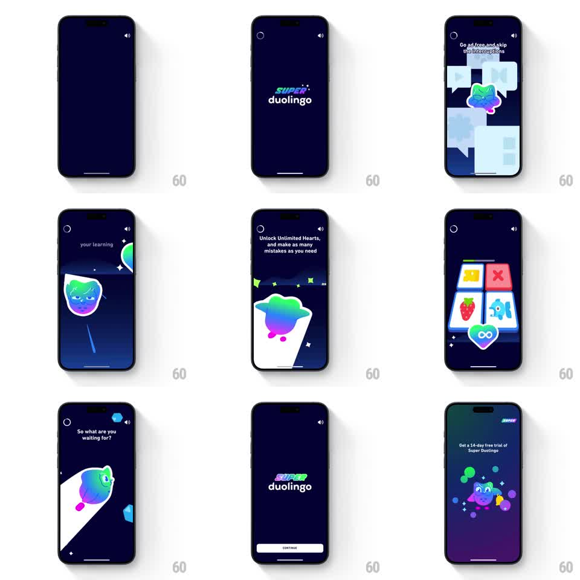

Media
Frame-by-frame

Rebuild this animation 1:1: Super Duolingo's splash and onboarding sequence - a gradient SUPER logo on deep navy gives way to auto-advancing benefit scenes with morphing gradient characters, then a purple-gradient trial offer with a floating mascot.

Rebuild this animation 1:1: Super Duolingo's splash and onboarding sequence - a gradient SUPER logo on deep navy gives way to auto-advancing benefit scenes with morphing gradient characters, then a purple-gradient trial offer with a floating mascot. ## Integration Integration: stack-agnostic spec - springs given as stiffness/damping, timed motions as duration + curve; map every value to your framework and animation library of choice. ## Scene Deep navy background throughout. Stage 0: SUPER duolingo wordmark (iridescent green-blue-violet gradient text). Benefit scenes, each with a one-line headline at top: ad-free chat bubbles with a gradient Duo face; unlimited-hearts spotlight scene with a gradient planet character rising in a beam; a 2x2 grid of lesson tiles with an infinity-heart badge; "So what are you waiting for?" with a gradient Duo peeking from behind a white card. Then the logo returns with a CONTINUE button, followed by a purple gradient screen: "Get a 14-day free trial of Super Duolingo" with a purple mascot among floating bubbles. Close control top left, mute toggle top right. ## Motion spec Pattern: auto-advancing gradient showcase carousel. - The logo shimmers: the gradient sweeps across the wordmark (background-position loop, ~2.5s, linear). - Each benefit scene holds ~2 seconds, then crossfades to the next (opacity + slight scale 0.98 to 1.0, 400ms, ease-in-out). - Inside scenes, characters float (translateY +-8px sine loop, ~2s) and the spotlight beam sweeps once across its stage (~1s, ease-in-out). - The peeking Duo slides up from behind the card (translateY 60px to 0, spring stiffness ~260, damping ~20) when his scene lands. - Final trial screen: background gradient animates slowly between purple stops (~6s loop); bubbles drift upward at different speeds (3 to 6s loops, staggered), and the mascot bobs (translateY +-10px, 2.4s sine). ## Calibration - Gradient characters are single iridescent fills with simple facial features - the gradient does the work, not detail. - Scene pacing is uniform; the rhythm is the brand. Do not speed up later scenes. ## Reduced motion Static scenes with 200ms crossfades between them; shimmer, float, and drift loops off; trial screen holds one gradient. ## Don't miss - The wordmark returns between the benefits and the trial offer - it bookends the sequence. - The white card in the final benefit scene is a hard-edged mask; Duo slides from behind it, not over it.